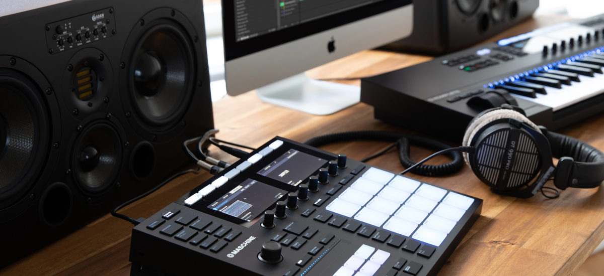

How to sell your beats online
{kind=link}

Want to know how to make extra income and earn more exposure from your beats? Selling your beats online has emerged as a viable new way for hip hop and R&B producers to make a career from their studio work. It’s a new avenue of getting your beats to big-name artists and is the combination of a growing market demand, with the arrival of several fully-featured online commerce platforms that cater to this space.
An entire cottage industry has developed around platforms like BeatStars and Airbit that provide producers with the necessary tools to build an audience, market their music and sell their hip hop and R&B beats online. It’s a reflection of an industry that continues to evolve in the digital era, and a prime example of the innovative methods that young producers are embracing in order to find sustainable ways of selling their music.
Making your beats work
Robin Wesley is a prime example of a producer who has journeyed from trying to get his music heard, to the point where he is now running a viable business selling his beats online. Wesley is also one of several expert voices sharing detailed insights with other producers via the in-depth guides on his Urban Masterclass site.
“I’ve been in this business for several years, and after earlier struggles, I’ve had my successes, and found that selling your beats online can be a source of sustainable income,” Wesley says. “The product itself has to be good to start with. However, I will say that 80% of my time is spent on marketing, with 20% of my time in the studio. It’s not just about making beats and throwing them on YouTube.”
Selling beats online bypasses many of the traditional avenues associated with the music industry, allowing you to take things into your own hands. “To get started, you don’t need a team. You don’t need a manager. You don’t even need a lot of money. You only need two things: good music, and a way to put your beats in-front of an audience.
Prior to platforms like BeatStars and Airbit, Wesley says selling beats was a cumbersome process. With the new beat-selling platforms, things are far easier allowing young producers to sign up for free and start selling beats within half an hour. “These ‘Beat Stores’ mean you get paid instantly, and allow customers to easily access your files. All you need to do is upload the music, create your licenses, set your prices and then connect your PayPal.”
They offer different subscription plans. Usually, the free plans come with a commission fee for the beat store provider. “I recommend getting on a paid plan where you can keep all your revenue,” Wesley says.
A new way of doing things
BeatStars was one of the early innovators that also offered a suite of automated tools. Mike Trampe, Marketing Director at BeatStars details the new opportunities offered by his company’s platform.
“BeatStars empowers producers and artists to build their own business and be self-reliant,” says Trampe. “We provide the technology to house your music, as well as sell it. Technology is advancing, and at the end of the day, BeatStars is a technology company.”
BeatStars has grown to more than 700,000 members since launch, across more than 160 countries. To date, producers have earned over $30 million on the platform. BeatStars had its biggest sales month ever in October this year, with producers earning more than $2 million in revenue, while Black Friday in November was its largest beat-selling day in history with more than $100,000 earned.
Key BeatStars features include an automated process for customers to listen, add to cart, purchase, and instantly receive files and contracts. Additional features include upgrading to a customizable Pro Page 2 store; allowing producers to giveaway an MP3 in exchange for an email address, Twitter follow, YouTube subscribe or BeatStars follow; Facebook Pixel and Google Analytics integration; Soundcloud monetization; email marketing; and an in-depth sales and statistics section.
Airbit is another popular platform with more than 200 members and $28 million worth of beats sold to date. Airbit has many of the same fully-automated commerce and integrated marketing features, alongside other user options like its embeddable store that allows producers to sell beats from their own website; a Co-Producer feature for splitting payments on beats created with others; plus the Dashboard to keep track of sales, plays, downloads, and other marketing stats.
Other available platforms include Soundgine, TRAKTRAIN, Beatwebsites, Caketunes, and Soundee.
your beats are digital products that you can sell over and over again
Understand your licensing
There are several different kinds of licensing available for beat sellers, broken down into two main types: exclusive and non-exclusive. While an exclusive license can only be sold to one artist, a non-exclusive license can be sold to an unlimited number of artists. For instance, a customer might purchase a beat for $30 that entitles them to a maximum of 10,000 streams across all platforms combined. The next ‘Premium’ license might allow 80,000 streams, and the step up from there allows them 100,000 streams.
“In essence, your beats are digital products that you can sell over and over again,” says Wesley. “The profit margins are crazy once you gain traction. Some of my beats might be sold 80 times to 80 different artists, which equates to 80 different licenses that I sell on just from the one production. You just need to do the numbers to see that it can be very profitable once you’ve built your audience and your fanbase.”
When you create a beat and upload it to your beat store, customers are able to instantly purchase these non-exclusive licenses. You can also choose to sell exclusive licenses from your beat store, though it is common to negotiate on the price with individual cases before selling the exclusive rights. After doing so, producers then mark the beat as ‘SOLD’ or remove it from their website entirely.
On both BeatStars and Airbit, by default, you can offer non-exclusive and exclusive licensing agreements for your beats. In addition to customizing both of these licenses, you also have the option of creating your own custom, tailor-made licensing agreements. BeatStars emphasizes the point that you don’t need to know the ins-and-outs of licensing agreements and intellectual property rights to create and modify these agreements and provides an in-depth guide to the topic.
Marketing is critical
Building a sustainable career out of your music involves a disciplined approach to how you spend your time marketing. “You are your own business, and you have to treat it that way,” says Trampe. “You have to be strategic about releasing new products and think about how you’re going to drive new customers to your music. The power is in your hands, but producers need to put themselves into a marketing mindset.”
The starting point is to stay consistent with uploading new beats, and promoting work on YouTube, Instagram, and other social media platforms, as well as building an email list of customers. Wesley encourages taking this further by developing a closer conversation with your audience.
“Beat-sellers don’t make money from day one. You need a plan to get started. How are you going to get your music heard, how will you close deals and get artists to pay for your beats?”
One strategy used by many producers is to present yourself as a real person that other artists can do business with, as opposed to hiding behind a logo or brand. “The industry is worldwide, and ‘trust’ plays a huge role.”
Wesley also emphasizes “customer conversion”, emphasizing that about 30% of his sales come from returning customers. “Even if you only have 100 people visiting your site, you should be able to convert at least four of them. If not, try to figure out why as you might be targeting the wrong people,” Wesley says.
There are no shortcuts
Selling beats is about scaling your business one sale at a time. There is no ‘get-rich-quick’ method, and no easy way of getting your music to someone like Drake.
“There is a lot of work that goes into it,” says Trampe from BeatStars. “You need to stay on top of your brand and get to know your audience. Who will be buying your productions? You might have a niche sound, so you’ll need to find the audience for it.”
“There are absolutely no shortcuts, and we’re upfront about that. With BeatStars’ educational resources, we’re trying to guide people in the right direction, teach them how to be entrepreneurs and successful.”
For a cohesive guide to selling your beats online, check out Robin Wesley’s guide here.
For more information to on selling on Airbit, check out their blog here.
For more BeatStars info, check out their FAQ page here.